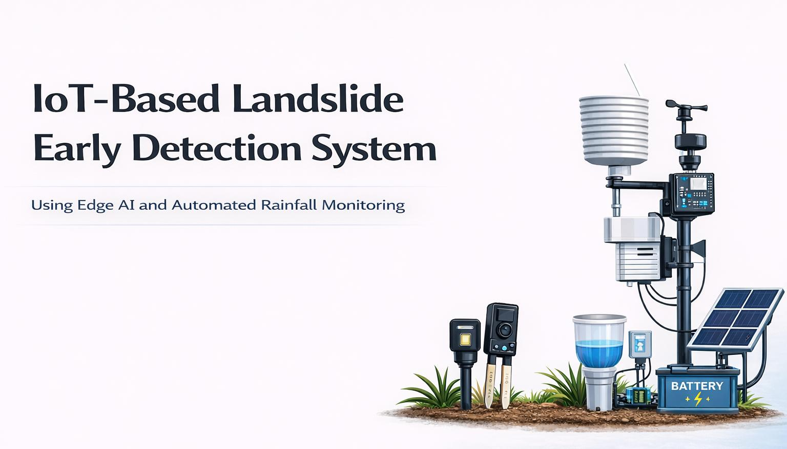

KG
Gunawardhana K.A.S.H
Researcher / Student
Supervisor details, group ID, additional team members and official contact details were not included in the supplied presentation and will be added when the client provides them.
An academic IoT and Edge AI research project focused on practical landslide early detection and field monitoring in Sri Lanka.
The project combines environmental sensors, local machine-learning inference and field communication technologies to support real-time landslide risk monitoring. Its design emphasizes low cost, reduced cloud dependency and practical deployment in vulnerable areas.
The current source material identifies the project subtitle as “Using Edge AI and Automated Rainfall Monitoring.”

Researcher / Student
Supervisor details, group ID, additional team members and official contact details were not included in the supplied presentation and will be added when the client provides them.
Problem, gap, objectives, comparison and system methodology.
Sensors, Edge AI, communications, power and hardware evidence.
Random Forest vs k-NN model comparison with key metrics.
OTP-gated upload/delete workflow with a public document library.
This version intentionally keeps unsupported details out of the site. New supervisor, team, milestone, citation and contact information can be inserted once supplied.